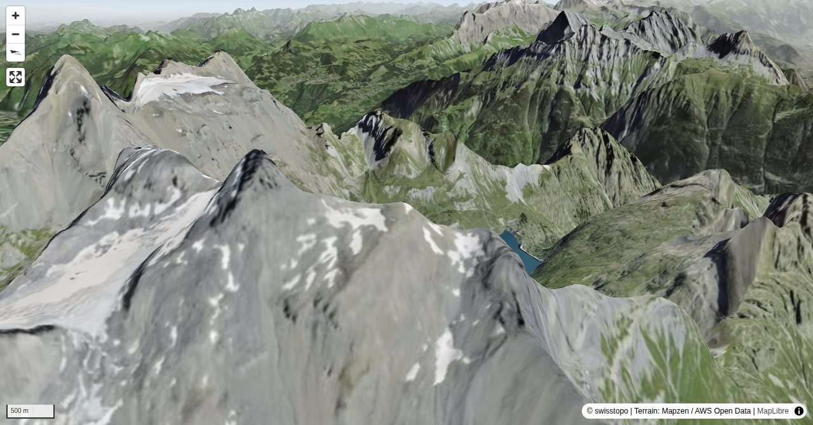

Le parcours est exigeant dans sa partie supérieure. L’itinéraire se fait en aller-retour sur des sentiers totalement balisés. Départ du camping de Van d’en Haut en direction du barrage de Salanfe, ensuite au col de Susanfe pour terminer par la longue crête S menant au col des Paresseux. Les 200 derniers mètres se gravissent par le versant SW.
Georges Sanga, active alpinist in both summer and winter, is the author of several ski tour and alpine hiking guides and an editor of the swisstopo ski tour maps. His passion for the mountains, and mountain photography, takes him to every corner of Switzerland.
Quick Facts
| Summit elevation | 3254 m |
|---|---|
| Difficulty | SAC T4 Alpine hiking with exposure, rougher terrain, and sections that are not suitable for beginners. Guide |
| Trailhead | Van d'en Haut, camping |
| Distance | 10.7 km (out-and-back) |
| Total ascent | ~1865 m |
| Elevation range | 1395-3254 m |
| Route sources | SAC Route Portal |
Photos


Route Map & Elevation
i
i
sac_scale (precise T1–T6) with
swissTLM3D Wanderwegart
fallback where OSM is silent (coarser T2/T3 and T4+ buckets).
Coverage: OSM 96.8% · swisstopo 2.4% · unknown 0.0%.Elevations computed from the inlined GPX track (SwissTopo height API).
Loading forecast…
3D Terrain View

Route Details
De Van d'en Haut par le col de Susanfe et le versant S
- TODO: Step 1 description.
- TODO: Step 2 description.
Terrain & safety
De Van d’en Haut, l’itinéraire suit, soit la route d’accès au barrage ou, dans un premier temps le sentier pédestre. Bien balisé, il utilise le parcours du Tour des Dents-du-Midi jusqu’au col de Susanfe, d’aspect lunaire. Ensuite, tout le versant S se gravit par un long cheminement à la pente soutenue, à ne pas sous-estimer. Piolet conseillé.
Source: SAC Route Portal
Getting There & Back
Start: Van d'en Haut, camping (1395 m)
Directions from to Van d'en Haut, camping
Route returns to Van d'en Haut, camping.
Field Reference
| Trailhead | Van d'en Haut, camping | 46.14050, 6.99300 |
|---|---|---|
| Summit | Haute Cime (3254 m) | 46.16108, 6.92324 |
Coordinates are WGS84 decimal degrees (lat, lon). Emergency: 112 (general) or 1414 (Rega air rescue). Page URL: